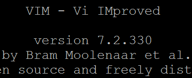
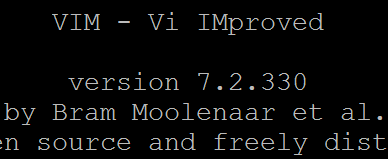
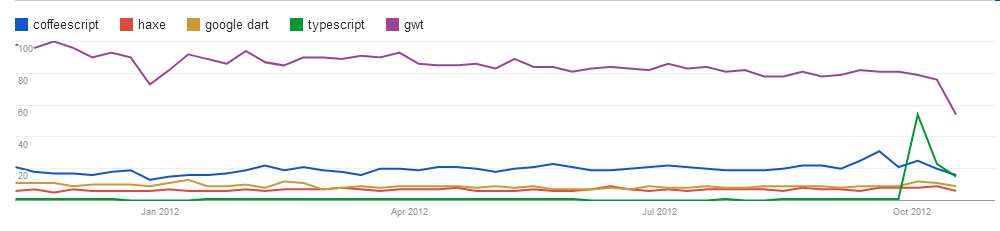
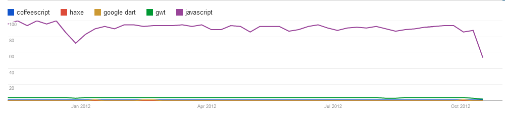

Best Approaches
For MakingLarge-Scale Web AppsKirill Safonov
Environment
"...Every engineer should care about his environment and should be a zealot for the customization
that he has
in there"
— Paul Irish, Fluent 2012
Environment
 


Large apps
- Code size
- Lifetime
- Team size
- Setup
Large app dev Keystones
- Code reuse
- Modularity
- Patterns
- Tests
- CI
Is Javascript good?
— JavaScript is a great language, but ^$%%$^&@ and $%^%*&*$@#$# !!
— Well, there's ##$%%^^& and #$%$^$%&# and also #@@*# , but I think JavaScript is a really great language!
JavaScript problems
- Language quirks
- Prototypal inheritance
- No modules
- No static types
coffeescript
#11 on GitHub
- Solves some quirks
- Classes and inheritance
- Node.JS integration
- Different syntax
- No modules*
- typeof and friends
- No source maps*
- Adoption?
Haxe
#48 on GitHub
- No quirks
- Optional strict typing
- Classes and inheritance
- Scopes (packages)
- Has been around for a while
- Multiple targets (+native)
- JS source maps
- Easy for Flash devs
- Different language
- Small [yet active] dev team
- Low adoption
Dart
#56 on GitHub
- No quirks
- Classes and inheritance
- Types
- Dartium
- Source maps
- Backed by Google
- Unusual syntax
- No Milestone 1, breaking changes
- Low adoption
GWT
- Java!
- Proven in production
- Backed by Google
- Java
- Fallbacks to plain JS fragments
- Heavy build phase
- Discontinued?
ES6 Harmony
- No quirks
- Modules
- Classes and inheritance
- JS source maps
- Not yet final
- Different* language
- Low adoption
TypeScript
- JS superset
- Types (optional)
- Classes, inheritance
- Duck typing
- JS source maps
- Backed by Microsoft
- Node.JS
- Stubs for libraries
- Very new
- Adoption?
Web Trends 2012
 CoffeeScript?
Haxe?
Dart?
GWT?
Harmony?
TypeScript?
JavaScript?
Closure compiler annotations
- Types and type expressions
- Classes, interfaces
- Inheritance
- Members visibility
Modules
- CommonJS (aka Node)
- AMD (aka RequireJS)
Use strict
- Be safer in new browsers
- Old browsers don't suffer
JSLint
- Doesn't care of you, but about your code
- If it cares too much, try JSHint
Test frameworks
Running Tests
Build scripts
Instant feedback
- Code checking
- Tests running
- Visuals
Thanks!
kirill.safonov@jetbrains.com
@ksafonov